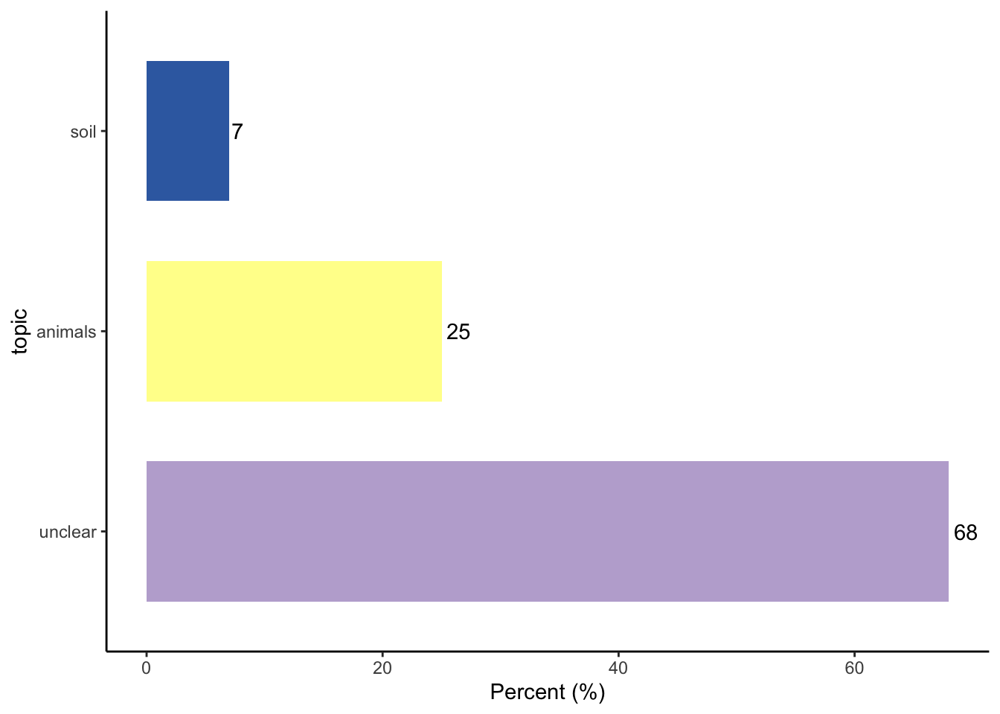

* Import records that were included after Rayyan screening and merge with the original Scopus file.
* Process manual labels from Rayyan.
* Make simple plots based on labels.
* Make additional plots based on bibliometric information.
About this lesson
This lesson is prepared for these who have already completed “Learn markdown” and “Learn bibliometrics” lessons and are working on the projects that involve bibliometric analyses and systematic mapping (using Rayyan).
By the way, this document was created using markdown in RStudio!
Load files
This is the same step as in “Learn bibliometrics” tutorial: Upload the file exported from Scopus (you can use the one provided) into RStudio (note that the file path you may need to use on your computer may be different, e.g., “H:/Users/z1234567/Downloads/scopus.bib”).
Then, convert the data from that file into internal bibliometrix format:
Code
bib <-convert2df("data/scopus.bib", dbsource ="scopus", format ="bibtex") # Convert to a bibliometric data frame#> #> Converting your scopus collection into a bibliographic dataframe#> #> Done!#> #> #> Generating affiliation field tag AU_UN from C1: Done!names(bib)#> [1] "AU" "DE" "ID" "C1" "CR" #> [6] "JI" "AB" "AR" "coden" "RP" #> [11] "DT" "DI" "BE" "FU" "BN" #> [16] "SN" "SO" "LA" "TC" "PN" #> [21] "page_count" "PP" "PU" "PM" "DB" #> [26] "TI" "url" "VL" "PY" "FX" #> [31] "J9" "AU_UN" "AU1_UN" "AU_UN_NR" "SR_FULL" #> [36] "SR"#write.csv(bib, "data/bib_as_df.csv", row.names = FALSE) #if you want to save this data frame as a csv file
Note that this is a data frame of all Scopus records before they were screened and labelled, but includes all the information that was exported from Scopus, but which is lost when we do screening in Rayyan.
In Rayyan, after completeing screening, export all records, including labels, decisions, etc., as a .csv file.
Now load the file which has all records exported from Rayyan:
Code
screened <-read.csv("./data/scopus_screened_labeled.csv")names(screened) #you can see there are fewer columns in the exported file#> [1] "key" "title" "year" "month" "day" "journal" #> [7] "issn" "volume" "issue" "pages" "authors" "url" #> [13] "language" "publisher" "location" "abstract" "notes" "doi" #> [19] "keywords" "pubmed_id" "pmc_id"dim(screened) #note that many fields get collapsed into the "notes" field#> [1] 1167 21#screened$notes[1] #contains export info, decisions and labels at the end #extract record labels from notes column - i.e. string after "RAYYAN-INCLUSION: "screened$decisions_labels <-sub(".*RAYYAN-INCLUSION: ", "", screened$notes)screened$decisions_labels[1:10] #some have labels#> [1] "{\"Losia\"=>\"Included\"} | RAYYAN-LABELS: animals" #> [2] "{\"Losia\"=>\"Excluded\"}" #> [3] "{\"Losia\"=>\"Included\"} | RAYYAN-LABELS: fish" #> [4] "{\"Losia\"=>\"Included\"} | RAYYAN-LABELS: fish,animals"#> [5] "{\"Losia\"=>\"Excluded\"}" #> [6] "{\"Losia\"=>\"Excluded\"}" #> [7] "{\"Losia\"=>\"Excluded\"}" #> [8] "{\"Losia\"=>\"Included\"} | RAYYAN-LABELS: animals" #> [9] "{\"Losia\"=>\"Excluded\"}" #> [10] "{\"Losia\"=>\"Included\"} | RAYYAN-LABELS: insects"#filter out (remove) rows that contain the string 'Excluded' ' in the decisions_labels column:screened %>%filter(!grepl('Excluded', decisions_labels)) -> screened_includeddim(screened_included) #350 records now - only included ones#> [1] 350 22#extract record labels from decisions_labels column - i.e. string after "RAYYAN-LABELS: "screened_included$labels <-sub(".*RAYYAN-LABELS: ", "", screened_included$decisions_labels)#see what values are there per record:table(screened_included$labels) #some dont have labels: {"Losia"=>"Included"}#> #> {"Losia"=>"Included"} animals animals,insects #> 48 74 12 #> fish fish,animals insects #> 76 3 114 #> soil soil,insects #> 19 4screened_included$labels <-gsub('\\{"Losia"=>"Included"\\}', 'no labels', screened_included$labels) #replacing with new label "no labels", NOTE: instead, we could remove these records from analysesdim(screened_included) #345 records#> [1] 350 23screened_included %>%filter(grepl('scopus', url)) %>%nrow() # 342 records from Scopus have doi contained in their url string: screened_included$url#> [1] 342
Merge data frames by article titles
Code
#before joining by title, need to tidy up titles# Removing all punctuation and extra white spaces in bib object, in order to compare dataframes by Title:bib$TI2 <-str_replace_all(bib$TI,"[:punct:]","") %>%str_replace_all(.,"[ ]+", " ") # Remove all punctuation and extra white spaces in screened_included object, in order to compare dataframes by Title:screened_included$TI2 <-str_to_upper(str_replace_all(screened_included$title,"[:punct:]","")) %>%str_replace_all(.,"[ ]+", " ")# The field 'TI2' will now be used for merging info from onto bib data framebib_title <-left_join(bib, screened_included %>% dplyr::select(url, title, TI2, year, journal, labels), by ="TI2")table(is.na(bib_title$labels)) #346 records with labels, these were included in Rayyan#> #> FALSE TRUE #> 346 821#only keep rows with labelsbib_title %>%filter(!is.na(labels)) -> bib_title_includeddim(bib_title_included) #346 records included#> [1] 346 42table(bib_title_included$labels) #> #> animals animals,insects fish fish,animals insects #> 72 12 75 3 113 #> no labels soil soil,insects #> 48 19 4names(bib_title_included) #now we have bibliometric file with only included articles and with labels#> [1] "AU" "DE" "ID" "C1" "CR" #> [6] "JI" "AB" "AR" "coden" "RP" #> [11] "DT" "DI" "BE" "FU" "BN" #> [16] "SN" "SO" "LA" "TC" "PN" #> [21] "page_count" "PP" "PU" "PM" "DB" #> [26] "TI" "url.x" "VL" "PY" "FX" #> [31] "J9" "AU_UN" "AU1_UN" "AU_UN_NR" "SR_FULL" #> [36] "SR" "TI2" "url.y" "title" "year" #> [41] "journal" "labels"
Test with bibliometrix
Code
# Preliminary descriptive analyses using summary functionresults <-biblioAnalysis(bib_title_included, sep =";")#summary(object = results, k = 10, pause = TRUE) #display a series of summary tablesplot(results, k =10, pause =TRUE) #this takes top 10 values from each table#> Hit <Return> to see next plot:
#> Hit <Return> to see next plot:
#> Hit <Return> to see next plot:
#> Hit <Return> to see next plot:
#> Hit <Return> to see next plot:
Process manual labels from Rayyan
Lets assumme we have two groups types of labels 1. topic: animals OR soil 2. animal_type: insects OR fish
Code
#create topic variablebib_title_included <- bib_title_included %>%mutate(topic =case_when(str_detect(labels, "animals") ~"animals", #just animalsstr_detect(labels, "soil" ) ~"soil", #just soilTRUE~"unclear")) #some will have none and we leave them as "unclear"names(bib_title_included)#> [1] "AU" "DE" "ID" "C1" "CR" #> [6] "JI" "AB" "AR" "coden" "RP" #> [11] "DT" "DI" "BE" "FU" "BN" #> [16] "SN" "SO" "LA" "TC" "PN" #> [21] "page_count" "PP" "PU" "PM" "DB" #> [26] "TI" "url.x" "VL" "PY" "FX" #> [31] "J9" "AU_UN" "AU1_UN" "AU_UN_NR" "SR_FULL" #> [36] "SR" "TI2" "url.y" "title" "year" #> [41] "journal" "labels" "topic"table(bib_title_included$topic)#> #> animals soil unclear #> 87 23 236#create animal_type variablebib_title_included <- bib_title_included %>%mutate(animal_type =case_when(str_detect(labels, "insects") ~"insects", #just animalsstr_detect(labels, "fish" ) ~"fish", #just soilTRUE~"unclear")) #some will have none and we leave them as "unclear"names(bib_title_included)#> [1] "AU" "DE" "ID" "C1" "CR" #> [6] "JI" "AB" "AR" "coden" "RP" #> [11] "DT" "DI" "BE" "FU" "BN" #> [16] "SN" "SO" "LA" "TC" "PN" #> [21] "page_count" "PP" "PU" "PM" "DB" #> [26] "TI" "url.x" "VL" "PY" "FX" #> [31] "J9" "AU_UN" "AU1_UN" "AU_UN_NR" "SR_FULL" #> [36] "SR" "TI2" "url.y" "title" "year" #> [41] "journal" "labels" "topic" "animal_type"table(bib_title_included$animal_type)#> #> fish insects unclear #> 78 129 139#we can do a table of counts by two variables at the same time:table(bib_title_included$topic, bib_title_included$animal_type)#> #> fish insects unclear#> animals 3 12 72#> soil 0 4 19#> unclear 75 113 48
Make simple plots based on labels
Plot with one variable with label counts
Code
#calculate and sort by countcount_topic <- bib_title_included %>%count(topic) %>%arrange(desc(n))#calculate percentagespercent_topic <- count_topic %>%mutate(percent = (n/sum(n)) *100)#round percentagespercent_topic$percent <-round(percent_topic$percent, digits =0)#as factor and ordering for a nicer plotpercent_topic$topic <-factor(percent_topic$topic,level = percent_topic$topic[order(percent_topic$n, decreasing =TRUE)])#for manually setting fill coloursmy.cols <- (c("#BEAED4", "#FFFF99", "#386CB0")) #make the plotggplot(percent_topic, aes(x = topic, y = percent)) +geom_col(aes(fill = topic), width =0.7) +geom_text(aes(label = percent), hjust =-0.2) +coord_flip() +scale_y_continuous(name ="Percent (%)") +xlab("topic") +scale_fill_manual(values = my.cols) +theme_classic() +theme(legend.position ="none")

Plot topic by year:
Code
bib_title_included %>%count(year, topic) %>%ggplot(aes(x = year, y = n, fill = topic)) +geom_col(width =0.7) +geom_text(position =position_stack(vjust =0.5), aes(fill = topic, label = n)) +theme_classic() +labs(x ="Year", y ="Article count", fill ="Discipline") +theme(legend.position ="none", axis.title.x =element_text(size =10))
Make additional plots based on bibliometric information
Bibliometric analysis - Keyword cloud
Code
bib2 <-biblioAnalysis(bib_title_included, sep =";")S <-summary(object = bib2, k =50, pause =FALSE) #only top 50 keywords#> #> #> MAIN INFORMATION ABOUT DATA#> #> Timespan 1981 : 2019 #> Sources (Journals, Books, etc) 172 #> Documents 346 #> Annual Growth Rate % 6.51 #> Document Average Age 11.7 #> Average citations per doc 21.25 #> Average citations per year per doc 1.415 #> References 18759 #> #> DOCUMENT TYPES #> article 331 #> article in press 1 #> book chapter 2 #> review 12 #> #> DOCUMENT CONTENTS#> Keywords Plus (ID) 2956 #> Author's Keywords (DE) 1279 #> #> AUTHORS#> Authors 1383 #> Author Appearances 1505 #> Authors of single-authored docs 25 #> #> AUTHORS COLLABORATION#> Single-authored docs 27 #> Documents per Author 0.25 #> Co-Authors per Doc 4.35 #> International co-authorships % 36.13 #> #> #> Annual Scientific Production#> #> Year Articles#> 1981 1#> 1986 2#> 1988 1#> 1993 5#> 1994 2#> 1996 2#> 1997 2#> 1998 5#> 1999 3#> 2000 5#> 2001 6#> 2002 5#> 2003 3#> 2004 4#> 2005 9#> 2006 10#> 2007 8#> 2008 11#> 2009 12#> 2010 14#> 2011 22#> 2012 20#> 2013 37#> 2014 32#> 2015 23#> 2016 27#> 2017 36#> 2018 28#> 2019 11#> #> Annual Percentage Growth Rate 6.51 #> #> #> Most Productive Authors#> #> Authors Articles Authors Articles Fractionalized#> 1 POULIN R 10 POULIN R 5.083#> 2 ROY BA 4 HURD H 2.333#> 3 ZHANG Y 4 ROY BA 2.083#> 4 BOOMSMA JJ 3 MORET Y 1.833#> 5 CABLE J 3 HEINS DC 1.583#> 6 COOKE SJ 3 ATLEGRIM O 1.500#> 7 ELLIOT SL 3 SCHMID-HEMPEL P 1.500#> 8 FREITAK D 3 TSENG M 1.500#> 9 GAUGLER R 3 SILVA FWS 1.033#> 10 HEINS DC 3 ABBOTT J 1.000#> 11 HURD H 3 ALLANDER K 1.000#> 12 KRASNOV BR 3 BARAL B 1.000#> 13 LEWIS EE 3 CHEPLICK GP 1.000#> 14 MORET Y 3 DRAKE DW 1.000#> 15 RANTALA MJ 3 HATCHER PE 1.000#> 16 SILVA FWS 3 JOHNSTON IA 1.000#> 17 WILLIAMS TD 3 KILLINY N 1.000#> 18 ADELMAN JS 2 MAINLAND CM 1.000#> 19 ARRIERO E 2 MILLS SC 1.000#> 20 ATLEGRIM O 2 MOLLEMAN F 1.000#> 21 ATYAME CM 2 NERISSA RAMNATH KM 1.000#> 22 BARBER I 2 PARKER MA 1.000#> 23 BONDY EC 2 RASGON JL 1.000#> 24 BUCHANAN KL 2 SKOGSMYR I 1.000#> 25 CASS BN 2 STEVENS L 1.000#> 26 CÉZILLY F 2 TIELEMAN BI 1.000#> 27 CHARLAT S 2 WOODLEY SK 1.000#> 28 CHÉRASSE S 2 ELLIOT SL 0.900#> 29 CORY JS 2 COTTER SC 0.833#> 30 COTTER SC 2 FREITAK D 0.833#> 31 CROSSIN GT 2 KAMIYA T 0.833#> 32 DAVIS ML 2 LAZZARO BP 0.833#> 33 DAWSON A 2 LEWIS EE 0.833#> 34 DLUGOSZ EM 2 PFUNDER M 0.833#> 35 DUMAS E 2 SCHWENKE RA 0.833#> 36 DURON O 2 STALLSMITH BW 0.833#> 37 FALIEX E 2 CABLE J 0.810#> 38 GIEHR J 2 BOOMSMA JJ 0.750#> 39 GREIVES TJ 2 NASH DR 0.750#> 40 GREWAL PS 2 NUNNEY L 0.750#> 41 HANSEN H 2 GAUGLER R 0.726#> 42 HECKEL DG 2 GIEHR J 0.700#> 43 HEIDINGER BJ 2 HEINZE J 0.700#> 44 HEINZE J 2 RANTALA MJ 0.700#> 45 HUNT J 2 SMYTH KN 0.700#> 46 HUNTER MS 2 KRASNOV BR 0.676#> 47 KAMIYA T 2 COOKE SJ 0.643#> 48 KARVONEN A 2 WILLIAMS TD 0.643#> 49 KELLY CD 2 CÉZILLY F 0.583#> 50 KELLY SE 2 GREWAL PS 0.583#> #> #> Top manuscripts per citations#> #> Paper #> 1 SCHRECK CB, 2001, AQUACULTURE #> 2 OTS I, 1998, FUNCT ECOL #> 3 LOVE OP, 2005, AM NAT #> 4 MCGRAW EA, 2002, PROC NATL ACAD SCI U S A #> 5 JOHNSTON IA, 2006, J EXP BIOL #> 6 ROHR JR, 2010, ENVIRON HEALTH PERSPECT #> 7 HURD H, 2001, TRENDS PARASITOL #> 8 MORET Y, 2006, PROC R SOC B BIOL SCI #> 9 FREITAK D, 2007, BMC BIOL #> 10 BOKHORST S, 2008, GLOBAL CHANGE BIOL #> 11 SAMAIN JF, 2007, AQUACULTURE #> 12 ROZEN DE, 2008, PROC NATL ACAD SCI U S A #> 13 BUCHANAN KL, 1999, ANIM BEHAV #> 14 ROY BA, 1993, NATURE #> 15 SCHMID-HEMPEL P, 1994, PHILOSOPHICAL TRANSACTIONS - ROYAL SOCIETY OF LONDON, B#> 16 CROSSIN GT, 2012, AM NAT #> 17 KARJALAINEN M, 2007, AMBIO #> 18 ATLEGRIM O, 1996, FOR ECOL MANAGE #> 19 SCHWENKE RA, 2016, ANN REV ENTOMOL #> 20 COTTER SC, 2010, J ANIM ECOL #> 21 ALLANDER K, 1997, FUNCT ECOL #> 22 GWYNN DM, 2005, PROC R SOC B BIOL SCI #> 23 REECE SE, 2009, EVOL APPL #> 24 FREDENSBORG BL, 2006, J ANIM ECOL #> 25 MACLEAN AM, 2014, PLOS BIOL #> 26 HAMMERSCHMIDT K, 2009, EVOLUTION #> 27 STEINAUER ML, 2007, MOL ECOL #> 28 BOLLACHE L, 2001, BEHAV ECOL SOCIOBIOL #> 29 FAUSER-MISSLIN A, 2014, J APPL ECOL #> 30 KIESECKER JM, 2000, ECOLOGY #> 31 MAZUC J, 2003, BEHAV ECOL #> 32 YANG DB, 2013, J EXP BIOL #> 33 KOLLURU GR, 2009, BEHAV ECOL #> 34 GREWAL PS, 1993, EXPERIENTIA #> 35 KARVONEN A, 2004, PARASITOLOGY #> 36 LUKASIK P, 2013, J EVOL BIOL #> 37 VEIGA JP, 2008, AM NAT #> 38 POULIN R, 2003, EVOLUTION #> 39 CHEPLICK GP, 1997, AMERICAN JOURNAL OF BOTANY #> 40 CROSSIN GT, 2016, FUNCT ECOL #> 41 REESON AF, 2000, OECOLOGIA #> 42 POULIN R, 1993, OECOLOGIA #> 43 LAMKOVÁ K, 2007, PARASITOL RES #> 44 KNOPF K, 2004, PARASITOLOGY #> 45 ARTHURS S, 2000, BIOCONTROL SCI TECHNOL #> 46 STOUT WE, 2005, AVIAN DIS #> 47 COULSON JC, 2001, J AVIAN BIOL #> 48 MCCONNACHIE SH, 2012, HORM BEHAV #> 49 YIN M, 2011, EVOLUTION #> 50 JACKSON JA, 2014, PLOS BIOL #> DOI TC TCperYear NTC#> 1 10.1016/S0044-8486(01)00580-4 356 15.48 3.374#> 2 10.1046/j.1365-2435.1998.00219.x 286 11.00 4.062#> 3 10.1086/497440 225 11.84 4.383#> 4 10.1073/pnas.052466499 198 9.00 3.300#> 5 10.1242/jeb.02153 183 10.17 3.653#> 6 10.1289/ehp.0901164 173 12.36 5.430#> 7 10.1016/S1471-4922(01)01927-4 146 6.35 1.384#> 8 10.1098/rspb.2006.3465 141 7.83 2.814#> 9 10.1186/1741-7007-5-56 123 7.24 2.076#> 10 10.1111/j.1365-2486.2008.01689.x 118 7.38 3.380#> 11 10.1016/j.aquaculture.2007.04.044 114 6.71 1.924#> 12 10.1073/pnas.0805403105 110 6.88 3.151#> 13 10.1006/anbe.1998.0969 103 4.12 2.116#> 14 10.1038/362056a0 103 3.32 2.418#> 15 10.1098/rstb.1994.0148 80 2.67 1.509#> 16 10.1086/666001 77 6.42 4.254#> 17 10.1579/0044-7447(2007)36[195:ECOCIT]2.0.CO;2 72 4.24 1.215#> 18 10.1016/S0378-1127(96)03794-2 71 2.54 1.511#> 19 10.1146/annurev-ento-010715-023924 67 8.38 5.725#> 20 10.1111/j.1365-2656.2009.01593.x 67 4.79 2.103#> 21 10.1046/j.1365-2435.1997.00095.x 66 2.44 1.189#> 22 10.1098/rspb.2005.3089 65 3.42 1.266#> 23 10.1111/j.1752-4571.2008.00060.x 62 4.13 2.797#> 24 10.1111/j.1365-2656.2005.01021.x 60 3.33 1.198#> 25 10.1371/journal.pbio.1001835 57 5.70 3.670#> 26 10.1111/j.1558-5646.2009.00687.x 56 3.73 2.526#> 27 10.1111/j.1365-294X.2007.03462.x 56 3.29 0.945#> 28 10.1007/s002650000300 55 2.39 0.521#> 29 10.1111/1365-2664.12188 53 5.30 3.412#> 30 10.1890/0012-9658(2000)081[2939:COOSBG]2.0.CO;2 53 2.21 1.345#> 31 10.1093/beheco/14.3.340 51 2.43 1.342#> 32 10.1242/jeb.092049 49 4.45 3.514#> 33 10.1093/beheco/arn124 49 3.27 2.211#> 34 10.1007/BF01955173 49 1.58 1.150#> 35 10.1017/S0031182004005281 48 2.40 1.401#> 36 10.1111/jeb.12260 46 4.18 3.298#> 37 10.1086/587850 46 2.88 1.318#> 38 10.1111/j.0014-3820.2003.tb01530.x 45 2.14 1.184#> 39 10.2307/2445880 45 1.67 0.811#> 40 10.1111/1365-2435.12482 44 5.50 3.759#> 41 10.1007/s004420000397 44 1.83 1.117#> 42 10.1007/BF00317516 43 1.39 1.009#> 43 10.1007/s00436-007-0546-3 42 2.47 0.709#> 44 10.1017/S0031182004005864 42 2.10 1.226#> 45 10.1080/09583150050044592 41 1.71 1.041#> 46 10.1637/7335-012805R1.1 39 2.05 0.760#> 47 10.1034/j.1600-048X.2001.320207.x 39 1.70 0.370#> 48 10.1016/j.yhbeh.2012.05.001 38 3.17 2.099#> 49 10.1111/j.1558-5646.2011.01240.x 38 2.92 2.844#> 50 10.1371/journal.pbio.1001901 37 3.70 2.382#> #> #> Corresponding Author's Countries#> #> Country Articles Freq SCP MCP MCP_Ratio#> 1 USA 69 0.26437 48 21 0.304#> 2 UNITED KINGDOM 31 0.11877 18 13 0.419#> 3 FRANCE 17 0.06513 14 3 0.176#> 4 GERMANY 17 0.06513 9 8 0.471#> 5 FINLAND 12 0.04598 7 5 0.417#> 6 NEW ZEALAND 11 0.04215 9 2 0.182#> 7 SPAIN 11 0.04215 8 3 0.273#> 8 CANADA 9 0.03448 6 3 0.333#> 9 CHINA 9 0.03448 5 4 0.444#> 10 SWEDEN 9 0.03448 5 4 0.444#> 11 JAPAN 6 0.02299 5 1 0.167#> 12 SWITZERLAND 6 0.02299 2 4 0.667#> 13 BRAZIL 5 0.01916 4 1 0.200#> 14 AUSTRALIA 4 0.01533 4 0 0.000#> 15 NORWAY 4 0.01533 2 2 0.500#> 16 ARGENTINA 3 0.01149 2 1 0.333#> 17 CHILE 3 0.01149 3 0 0.000#> 18 CZECH REPUBLIC 3 0.01149 1 2 0.667#> 19 DENMARK 3 0.01149 2 1 0.333#> 20 GEORGIA 3 0.01149 3 0 0.000#> 21 MEXICO 3 0.01149 3 0 0.000#> 22 AUSTRIA 2 0.00766 0 2 1.000#> 23 BELGIUM 2 0.00766 1 1 0.500#> 24 ESTONIA 2 0.00766 0 2 1.000#> 25 IRELAND 2 0.00766 2 0 0.000#> 26 ISRAEL 2 0.00766 0 2 1.000#> 27 ITALY 2 0.00766 1 1 0.500#> 28 PORTUGAL 2 0.00766 1 1 0.500#> 29 IRAN 1 0.00383 0 1 1.000#> 30 KOREA 1 0.00383 1 0 0.000#> 31 MALAYSIA 1 0.00383 0 1 1.000#> 32 NEPAL 1 0.00383 0 1 1.000#> 33 NETHERLANDS 1 0.00383 0 1 1.000#> 34 POLAND 1 0.00383 0 1 1.000#> 35 SLOVAKIA 1 0.00383 0 1 1.000#> 36 SOUTH AFRICA 1 0.00383 1 0 0.000#> 37 TRINIDAD AND TOBAGO 1 0.00383 1 0 0.000#> #> #> SCP: Single Country Publications#> #> MCP: Multiple Country Publications#> #> #> Total Citations per Country#> #> Country Total Citations Average Article Citations#> 1 USA 1895 27.46#> 2 UNITED KINGDOM 1377 44.42#> 3 FRANCE 439 25.82#> 4 CANADA 414 46.00#> 5 GERMANY 406 23.88#> 6 ESTONIA 311 155.50#> 7 FINLAND 282 23.50#> 8 SWEDEN 204 22.67#> 9 SWITZERLAND 197 32.83#> 10 SPAIN 163 14.82#> 11 NEW ZEALAND 156 14.18#> 12 CHINA 101 11.22#> 13 CZECH REPUBLIC 87 29.00#> 14 NORWAY 84 21.00#> 15 MEXICO 66 22.00#> 16 JAPAN 47 7.83#> 17 IRELAND 46 23.00#> 18 GEORGIA 44 14.67#> 19 AUSTRALIA 43 10.75#> 20 CHILE 35 11.67#> 21 AUSTRIA 33 16.50#> 22 PORTUGAL 33 16.50#> 23 DENMARK 32 10.67#> 24 BRAZIL 31 6.20#> 25 ITALY 22 11.00#> 26 MALAYSIA 19 19.00#> 27 NETHERLANDS 19 19.00#> 28 ARGENTINA 18 6.00#> 29 SLOVAKIA 12 12.00#> 30 ISRAEL 11 5.50#> 31 IRAN 10 10.00#> 32 SOUTH AFRICA 7 7.00#> 33 BELGIUM 4 2.00#> 34 KOREA 4 4.00#> 35 TRINIDAD AND TOBAGO 2 2.00#> 36 NEPAL 1 1.00#> 37 POLAND 0 0.00#> #> #> Most Relevant Sources#> #> Sources Articles#> 1 PARASITOLOGY 15#> 2 JOURNAL OF EVOLUTIONARY BIOLOGY 11#> 3 PLOS ONE 10#> 4 FUNCTIONAL ECOLOGY 8#> 5 OECOLOGIA 7#> 6 AMERICAN NATURALIST 6#> 7 BEHAVIORAL ECOLOGY AND SOCIOBIOLOGY 6#> 8 BMC EVOLUTIONARY BIOLOGY 6#> 9 ECOLOGY AND EVOLUTION 6#> 10 JOURNAL OF EXPERIMENTAL BIOLOGY 6#> 11 PROCEEDINGS OF THE ROYAL SOCIETY B: BIOLOGICAL SCIENCES 6#> 12 EVOLUTION 5#> 13 HEREDITY 5#> 14 JOURNAL OF ANIMAL ECOLOGY 5#> 15 PARASITES AND VECTORS 5#> 16 ANIMAL BEHAVIOUR 4#> 17 AQUACULTURE 4#> 18 BEHAVIORAL ECOLOGY 4#> 19 HORMONES AND BEHAVIOR 4#> 20 MOLECULAR ECOLOGY 4#> 21 PARASITOLOGY RESEARCH 4#> 22 AMERICAN JOURNAL OF BOTANY 3#> 23 APPLIED AND ENVIRONMENTAL MICROBIOLOGY 3#> 24 BIOLOGICAL JOURNAL OF THE LINNEAN SOCIETY 3#> 25 CANADIAN JOURNAL OF ZOOLOGY 3#> 26 EVOLUTIONARY APPLICATIONS 3#> 27 EVOLUTIONARY ECOLOGY 3#> 28 INTERNATIONAL JOURNAL FOR PARASITOLOGY 3#> 29 JOURNAL OF ECONOMIC ENTOMOLOGY 3#> 30 JOURNAL OF FISH BIOLOGY 3#> 31 JOURNAL OF INSECT PHYSIOLOGY 3#> 32 JOURNAL OF INVERTEBRATE PATHOLOGY 3#> 33 JOURNAL OF PARASITOLOGY 3#> 34 OIKOS 3#> 35 PEERJ 3#> 36 APPLIED MICROBIOLOGY AND BIOTECHNOLOGY 2#> 37 AQUACULTURE RESEARCH 2#> 38 BIOLOGY LETTERS 2#> 39 BMC BIOLOGY 2#> 40 BMC ECOLOGY 2#> 41 CURRENT BIOLOGY 2#> 42 DEVELOPMENTAL AND COMPARATIVE IMMUNOLOGY 2#> 43 DISEASES OF AQUATIC ORGANISMS 2#> 44 ECOLOGICAL ENTOMOLOGY 2#> 45 ECOLOGY LETTERS 2#> 46 ECOSCIENCE 2#> 47 EXPERIMENTAL PARASITOLOGY 2#> 48 FRONTIERS IN ZOOLOGY 2#> 49 GENERAL AND COMPARATIVE ENDOCRINOLOGY 2#> 50 GLOBAL CHANGE BIOLOGY 2#> #> #> Most Relevant Keywords#> #> Author Keywords (DE) Articles Keywords-Plus (ID) Articles#> 1 PHENOTYPIC PLASTICITY 25 FEMALE 190#> 2 REPRODUCTION 22 ANIMALS 174#> 3 FITNESS 15 ANIMAL 173#> 4 PARASITE 15 MALE 153#> 5 REPRODUCTIVE SUCCESS 13 ARTICLE 136#> 6 TRADE-OFF 12 REPRODUCTION 122#> 7 IMMUNITY 10 PHYSIOLOGY 113#> 8 WOLBACHIA 10 NONHUMAN 86#> 9 FECUNDITY 8 HEXAPODA 80#> 10 LIFE HISTORY 7 REPRODUCTIVE SUCCESS 78#> 11 RESISTANCE 7 GENETICS 64#> 12 CYTOPLASMIC INCOMPATIBILITY 6 CONTROLLED STUDY 57#> 13 STRESS 6 ANIMALIA 55#> 14 SURVIVAL 6 LARVA 48#> 15 TERMINAL INVESTMENT 6 MICROBIOLOGY 48#> 16 VIRULENCE 6 PHENOTYPIC PLASTICITY 48#> 17 BEHAVIOR 5 WOLBACHIA 48#> 18 DISEASE 5 PHENOTYPE 45#> 19 IMMUNE FUNCTION 5 PRIORITY JOURNAL 45#> 20 LIFE-HISTORY TRAITS 5 REPRODUCTIVE FITNESS 45#> 21 PARASITISM 5 GENETIC FITNESS 42#> 22 PARENTAL CARE 5 FITNESS 41#> 23 REPRODUCTIVE INVESTMENT 5 METABOLISM 41#> 24 SYMBIOSIS 5 IMMUNITY 40#> 25 TEMPERATURE 5 ADAPTATION 39#> 26 TESTOSTERONE 5 PARASITOLOGY 39#> 27 BIOLOGICAL CONTROL 4 FERTILITY 38#> 28 CLIMATE CHANGE 4 SYMBIOSIS 38#> 29 CONSERVATION 4 HOST PARASITE INTERACTION 36#> 30 ECOIMMUNOLOGY 4 GROWTH 34#> 31 ECOLOGICAL IMMUNOLOGY 4 LONGEVITY 34#> 32 GLUCOCORTICOIDS 4 SURVIVAL 34#> 33 GROWTH 4 BODY SIZE 32#> 34 LIFE HISTORY TRADE-OFFS 4 ANIMAL EXPERIMENT 31#> 35 LONGEVITY 4 BACTERIA (MICROORGANISMS) 31#> 36 MUTUALISM 4 DEVELOPMENT AND AGING 30#> 37 PARASITES 4 VIRULENCE 30#> 38 PHENOLOXIDASE 4 IMMUNE RESPONSE 29#> 39 POLLINATION 4 IMMUNOLOGY 29#> 40 TRADE-OFFS 4 FISH 28#> 41 TRANSMISSION 4 FUNGI 28#> 42 BEMISIA TABACI 3 INSECT 28#> 43 COMPETITION 3 FISH DISEASES 27#> 44 CORTICOSTERONE 3 PARASITE 27#> 45 CORTISOL 3 PATHOGENICITY 27#> 46 EGG PRODUCTION 3 EVOLUTION 25#> 47 ENTOMOPATHOGENIC NEMATODES 3 HOST-PARASITE INTERACTION 25#> 48 FISH 3 LIFE HISTORY TRAIT 25#> 49 HERBIVORY 3 MORTALITY 24#> 50 HERITABILITY 3 TRADE-OFF 24keywords <- S$MostRelKeywords #exract single vector with most relevant keywordswords <- keywords[, 1] #only using Author Keywords (DE) freq <-as.numeric(keywords[, 2]) #vector of keyword frequencies for Author Keywords (DE) prob <- freq/sum(freq)#words <- keywords[, 3] #only using Keywords-Plus (ID) #freq <- as.numeric(keywords[, 4]) #vector of keyword frequencies for Keywords-Plus (ID) #prob <- freq/sum(freq)wordcloud2(data.frame(words, prob), shuffle =TRUE, size =0.5, color ="random-dark")
Global map based on counts of affiliation country of first authors
Code
# Extract country information from the "AU1_CO" bibmap <-metaTagExtraction(bib_title_included, Field ="AU1_CO", sep =";") bibmap <-metaTagExtraction(bibmap, Field ="AU_CO", sep =";") #just getting the countries out of affiliations#table(bibmap$AU1_CO) #see the country counts as a simple table# Create a data frame with counts of articles from each countrybibmap %>%group_by(AU1_CO) %>%count() %>%filter(!is.na(AU1_CO)) -> firstcountrycounts# Load world map data and remove countries with longitude >180 to make an equal projection-like mapworld_map <-map_data("world") %>%filter(! long >180)# Format country names to match regions on the world mapfirstcountrycounts$region <-str_to_title(firstcountrycounts$AU1_CO)firstcountrycounts$region[firstcountrycounts$region =="Usa"] <-"USA"firstcountrycounts$region[firstcountrycounts$region =="Korea"] <-"South Korea"# Join count data with map data and set missing counts to zeroemptymap <-tibble(region =unique(world_map$region), n =rep(0,length(unique(world_map$region))))fullmap <-left_join(emptymap, firstcountrycounts, by ="region")fullmap$n <- fullmap$n.x + fullmap$n.yfullmap$n[is.na(fullmap$n)] <-0# Create a plot of the world map with regions colored based on article countsfullmap %>%ggplot(aes(fill = n, map_id = region)) +geom_map(map = world_map) +expand_limits(x = world_map$long, y = world_map$lat) +coord_map("moll") +# Mollweide projectiontheme_map() +#nice simple theme for the mapscale_fill_gradient(low ="#ECF207", high ="#8B0000", # set color gradientname ="Score", na.value ="gray",limits =c(0.1, 24),guide =guide_colorbar(direction ="vertical.",barwidth =unit(15, units ="mm"), barheight =unit(50, units ="mm"))) +guides(fill =guide_colourbar()) +theme(panel.background =element_rect(fill ="transparent", colour =NA),plot.background =element_rect(fill ="transparent", colour =NA))
Chord diagram based on affiliation country of authors
Code
#using a bit different approach to get countries outbib3 <-metaTagExtraction(bib_title_included, Field ="AU_CO", sep =";")NetMatrix <-biblioNetwork(bib3, analysis ="collaboration", network ="countries", sep =";") #this extracts all sort of stuffresults <-biblioAnalysis(bib3, sep =";")S2 <-summary(object = results, k =10, pause =FALSE) #only using top 20 countries#> #> #> MAIN INFORMATION ABOUT DATA#> #> Timespan 1981 : 2019 #> Sources (Journals, Books, etc) 172 #> Documents 346 #> Annual Growth Rate % 6.51 #> Document Average Age 11.7 #> Average citations per doc 21.25 #> Average citations per year per doc 1.415 #> References 18759 #> #> DOCUMENT TYPES #> article 331 #> article in press 1 #> book chapter 2 #> review 12 #> #> DOCUMENT CONTENTS#> Keywords Plus (ID) 2956 #> Author's Keywords (DE) 1279 #> #> AUTHORS#> Authors 1383 #> Author Appearances 1505 #> Authors of single-authored docs 25 #> #> AUTHORS COLLABORATION#> Single-authored docs 27 #> Documents per Author 0.25 #> Co-Authors per Doc 4.35 #> International co-authorships % 36.13 #> #> #> Annual Scientific Production#> #> Year Articles#> 1981 1#> 1986 2#> 1988 1#> 1993 5#> 1994 2#> 1996 2#> 1997 2#> 1998 5#> 1999 3#> 2000 5#> 2001 6#> 2002 5#> 2003 3#> 2004 4#> 2005 9#> 2006 10#> 2007 8#> 2008 11#> 2009 12#> 2010 14#> 2011 22#> 2012 20#> 2013 37#> 2014 32#> 2015 23#> 2016 27#> 2017 36#> 2018 28#> 2019 11#> #> Annual Percentage Growth Rate 6.51 #> #> #> Most Productive Authors#> #> Authors Articles Authors Articles Fractionalized#> 1 POULIN R 10 POULIN R 5.08#> 2 ROY BA 4 HURD H 2.33#> 3 ZHANG Y 4 ROY BA 2.08#> 4 BOOMSMA JJ 3 MORET Y 1.83#> 5 CABLE J 3 HEINS DC 1.58#> 6 COOKE SJ 3 ATLEGRIM O 1.50#> 7 ELLIOT SL 3 SCHMID-HEMPEL P 1.50#> 8 FREITAK D 3 TSENG M 1.50#> 9 GAUGLER R 3 SILVA FWS 1.03#> 10 HEINS DC 3 ABBOTT J 1.00#> #> #> Top manuscripts per citations#> #> Paper DOI TC TCperYear NTC#> 1 SCHRECK CB, 2001, AQUACULTURE 10.1016/S0044-8486(01)00580-4 356 15.48 3.37#> 2 OTS I, 1998, FUNCT ECOL 10.1046/j.1365-2435.1998.00219.x 286 11.00 4.06#> 3 LOVE OP, 2005, AM NAT 10.1086/497440 225 11.84 4.38#> 4 MCGRAW EA, 2002, PROC NATL ACAD SCI U S A 10.1073/pnas.052466499 198 9.00 3.30#> 5 JOHNSTON IA, 2006, J EXP BIOL 10.1242/jeb.02153 183 10.17 3.65#> 6 ROHR JR, 2010, ENVIRON HEALTH PERSPECT 10.1289/ehp.0901164 173 12.36 5.43#> 7 HURD H, 2001, TRENDS PARASITOL 10.1016/S1471-4922(01)01927-4 146 6.35 1.38#> 8 MORET Y, 2006, PROC R SOC B BIOL SCI 10.1098/rspb.2006.3465 141 7.83 2.81#> 9 FREITAK D, 2007, BMC BIOL 10.1186/1741-7007-5-56 123 7.24 2.08#> 10 BOKHORST S, 2008, GLOBAL CHANGE BIOL 10.1111/j.1365-2486.2008.01689.x 118 7.38 3.38#> #> #> Corresponding Author's Countries#> #> Country Articles Freq SCP MCP MCP_Ratio#> 1 USA 69 0.2644 48 21 0.304#> 2 UNITED KINGDOM 31 0.1188 18 13 0.419#> 3 FRANCE 17 0.0651 14 3 0.176#> 4 GERMANY 17 0.0651 9 8 0.471#> 5 FINLAND 12 0.0460 7 5 0.417#> 6 NEW ZEALAND 11 0.0421 9 2 0.182#> 7 SPAIN 11 0.0421 8 3 0.273#> 8 CANADA 9 0.0345 6 3 0.333#> 9 CHINA 9 0.0345 5 4 0.444#> 10 SWEDEN 9 0.0345 5 4 0.444#> #> #> SCP: Single Country Publications#> #> MCP: Multiple Country Publications#> #> #> Total Citations per Country#> #> Country Total Citations Average Article Citations#> 1 USA 1895 27.46#> 2 UNITED KINGDOM 1377 44.42#> 3 FRANCE 439 25.82#> 4 CANADA 414 46.00#> 5 GERMANY 406 23.88#> 6 ESTONIA 311 155.50#> 7 FINLAND 282 23.50#> 8 SWEDEN 204 22.67#> 9 SWITZERLAND 197 32.83#> 10 SPAIN 163 14.82#> #> #> Most Relevant Sources#> #> Sources Articles#> 1 PARASITOLOGY 15#> 2 JOURNAL OF EVOLUTIONARY BIOLOGY 11#> 3 PLOS ONE 10#> 4 FUNCTIONAL ECOLOGY 8#> 5 OECOLOGIA 7#> 6 AMERICAN NATURALIST 6#> 7 BEHAVIORAL ECOLOGY AND SOCIOBIOLOGY 6#> 8 BMC EVOLUTIONARY BIOLOGY 6#> 9 ECOLOGY AND EVOLUTION 6#> 10 JOURNAL OF EXPERIMENTAL BIOLOGY 6#> #> #> Most Relevant Keywords#> #> Author Keywords (DE) Articles Keywords-Plus (ID) Articles#> 1 PHENOTYPIC PLASTICITY 25 FEMALE 190#> 2 REPRODUCTION 22 ANIMALS 174#> 3 FITNESS 15 ANIMAL 173#> 4 PARASITE 15 MALE 153#> 5 REPRODUCTIVE SUCCESS 13 ARTICLE 136#> 6 TRADE-OFF 12 REPRODUCTION 122#> 7 IMMUNITY 10 PHYSIOLOGY 113#> 8 WOLBACHIA 10 NONHUMAN 86#> 9 FECUNDITY 8 HEXAPODA 80#> 10 LIFE HISTORY 7 REPRODUCTIVE SUCCESS 78MostProdCountries <- S2$MostProdCountriesMostProdCountries$Articles <-as.numeric(MostProdCountries$Articles) #counts as numeric valuesCountries <- MostProdCountries[1:10, "Country"] #trim again to top 10, could change this to smaller number if neededCountries <-trimws(Countries) #trim white space after country namenet_matrix <-as.matrix(NetMatrix) #convert to matrixstr(net_matrix)#> num [1:49, 1:49] 131 17 3 9 7 5 2 6 2 1 ...#> - attr(*, "dimnames")=List of 2#> ..$ : chr [1:49] "USA" "UNITED KINGDOM" "FRANCE" "CANADA" ...#> ..$ : chr [1:49] "USA" "UNITED KINGDOM" "FRANCE" "CANADA" ...intersect(rownames(net_matrix), Countries)#> [1] "USA" "UNITED KINGDOM" "FRANCE" "CANADA" "GERMANY" "CHINA" #> [7] "FINLAND" "SPAIN" "NEW ZEALAND" "SWEDEN"setdiff(rownames(net_matrix), Countries)#> [1] "AUSTRALIA" "NORWAY" "SWITZERLAND" "BRAZIL" "JAPAN" #> [6] "ISRAEL" "CZECH REPUBLIC" "NETHERLANDS" "ARGENTINA" "ITALY" #> [11] "SOUTH AFRICA" "BELGIUM" "DENMARK" "ESTONIA" "IRAN" #> [16] "PORTUGAL" "CHILE" "POLAND" "AUSTRIA" "IRELAND" #> [21] "LATVIA" "MALAYSIA" "MEXICO" "PANAMA" "PHILIPPINES" #> [26] "TRINIDAD AND TOBAGO" "URUGUAY" "COLOMBIA" "ECUADOR" "GREECE" #> [31] "HUNGARY" "ICELAND" "INDIA" "KOREA" "LITHUANIA" #> [36] "NEPAL" "ROMANIA" "SLOVAKIA" "THAILAND"setdiff(Countries, rownames(net_matrix))#> character(0)small_matrix <- net_matrix[Countries, Countries]diag(small_matrix) <-0#get rid of collaboration with same countrycircos.clear() #prepare plotting areachordDiagramFromMatrix(small_matrix) #make the plot
Resources
See more colors in R and with ggplot2: http://www.cookbook-r.com/Graphs/Colors_(ggplot2)/ or https://r-charts.com/colors/ or https://cran.r-project.org/web/packages/colorBlindness/vignettes/colorBlindness.html
Co
Source Code
---title: "Integrate Rayyan and run analyses"format: html: code-fold: true code-tools: trueeditor: visualauthor: "M.Lagisz"date: 2023-07-14date-format: shortoutput: pdf_document: default html_document: defaulteditor_options: chunk_output_type: console---```{r}#| include: falseknitr::opts_chunk$set(error =TRUE) #allow some execution errors for demonstration purposesknitr::opts_chunk$set(eval =TRUE, echo =TRUE, warning =FALSE, collapse =TRUE, comment ="#>")sessionInfo()library(bibliometrix) library(tidyverse)library(stringr)library(knitr)library(forcats)library(ggplot2)library(ggthemes) #for ggplot2library(hrbrthemes) #for ggplot2library(bibliometrix)#library(igraph) # for more advanced networks#library(patchwork) # for multi-panel figureslibrary(RColorBrewer)library(wordcloud2)library(migest)library(circlize)```**Before the lesson:**\ Please make sure you got the latest versions installed of:\ \* R (<https://www.r-project.org/>)\ \* RStudio Desktop (<https://posit.co/downloads/>)\ **Lesson objectives:** \* Import records that were included after Rayyan screening and merge with the original Scopus file.\ \* Process manual labels from Rayyan.\ \* Make simple plots based on labels.\ \* Make additional plots based on bibliometric information.\ # About this lesson This lesson is prepared for these who have already completed "Learn markdown" and "Learn bibliometrics" lessons and are working on the projects that involve bibliometric analyses and systematic mapping (using Rayyan). By the way, this document was created using markdown in RStudio! ------------------------------------------------------------------------ # Load filesThis is the same step as in "Learn bibliometrics" tutorial: Upload the file exported from Scopus (you can use the one provided) into RStudio (note that the file path you may need to use on your computer may be different, e.g., "H:/Users/z1234567/Downloads/scopus.bib"). Then, convert the data from that file into internal *bibliometrix* format: ```{r}bib <-convert2df("data/scopus.bib", dbsource ="scopus", format ="bibtex") # Convert to a bibliometric data framenames(bib)#write.csv(bib, "data/bib_as_df.csv", row.names = FALSE) #if you want to save this data frame as a csv file```Note that this is a data frame of all Scopus records before they were screened and labelled, but includes all the information that was exported from Scopus, but which is lost when we do screening in Rayyan.In Rayyan, after completeing screening, export all records, including labels, decisions, etc., as a .csv file.Now load the file which has all records exported from Rayyan:```{r}screened <-read.csv("./data/scopus_screened_labeled.csv")names(screened) #you can see there are fewer columns in the exported filedim(screened) #note that many fields get collapsed into the "notes" field#screened$notes[1] #contains export info, decisions and labels at the end #extract record labels from notes column - i.e. string after "RAYYAN-INCLUSION: "screened$decisions_labels <-sub(".*RAYYAN-INCLUSION: ", "", screened$notes)screened$decisions_labels[1:10] #some have labels#filter out (remove) rows that contain the string 'Excluded' ' in the decisions_labels column:screened %>%filter(!grepl('Excluded', decisions_labels)) -> screened_includeddim(screened_included) #350 records now - only included ones#extract record labels from decisions_labels column - i.e. string after "RAYYAN-LABELS: "screened_included$labels <-sub(".*RAYYAN-LABELS: ", "", screened_included$decisions_labels)#see what values are there per record:table(screened_included$labels) #some dont have labels: {"Losia"=>"Included"}screened_included$labels <-gsub('\\{"Losia"=>"Included"\\}', 'no labels', screened_included$labels) #replacing with new label "no labels", NOTE: instead, we could remove these records from analysesdim(screened_included) #345 recordsscreened_included %>%filter(grepl('scopus', url)) %>%nrow() # 342 records from Scopus have doi contained in their url string: screened_included$url```Merge data frames by article titles```{r}#before joining by title, need to tidy up titles# Removing all punctuation and extra white spaces in bib object, in order to compare dataframes by Title:bib$TI2 <-str_replace_all(bib$TI,"[:punct:]","") %>%str_replace_all(.,"[ ]+", " ") # Remove all punctuation and extra white spaces in screened_included object, in order to compare dataframes by Title:screened_included$TI2 <-str_to_upper(str_replace_all(screened_included$title,"[:punct:]","")) %>%str_replace_all(.,"[ ]+", " ")# The field 'TI2' will now be used for merging info from onto bib data framebib_title <-left_join(bib, screened_included %>% dplyr::select(url, title, TI2, year, journal, labels), by ="TI2")table(is.na(bib_title$labels)) #346 records with labels, these were included in Rayyan#only keep rows with labelsbib_title %>%filter(!is.na(labels)) -> bib_title_includeddim(bib_title_included) #346 records includedtable(bib_title_included$labels) names(bib_title_included) #now we have bibliometric file with only included articles and with labels```Test with bibliometrix ```{r}# Preliminary descriptive analyses using summary functionresults <-biblioAnalysis(bib_title_included, sep =";")#summary(object = results, k = 10, pause = TRUE) #display a series of summary tablesplot(results, k =10, pause =TRUE) #this takes top 10 values from each table```# Process manual labels from RayyanLets assumme we have two groups types of labels 1. topic: animals OR soil2. animal_type: insects OR fish```{r}#create topic variablebib_title_included <- bib_title_included %>%mutate(topic =case_when(str_detect(labels, "animals") ~"animals", #just animalsstr_detect(labels, "soil" ) ~"soil", #just soilTRUE~"unclear")) #some will have none and we leave them as "unclear"names(bib_title_included)table(bib_title_included$topic)#create animal_type variablebib_title_included <- bib_title_included %>%mutate(animal_type =case_when(str_detect(labels, "insects") ~"insects", #just animalsstr_detect(labels, "fish" ) ~"fish", #just soilTRUE~"unclear")) #some will have none and we leave them as "unclear"names(bib_title_included)table(bib_title_included$animal_type)#we can do a table of counts by two variables at the same time:table(bib_title_included$topic, bib_title_included$animal_type)```# Make simple plots based on labels Plot with one variable with label counts```{r}#calculate and sort by countcount_topic <- bib_title_included %>%count(topic) %>%arrange(desc(n))#calculate percentagespercent_topic <- count_topic %>%mutate(percent = (n/sum(n)) *100)#round percentagespercent_topic$percent <-round(percent_topic$percent, digits =0)#as factor and ordering for a nicer plotpercent_topic$topic <-factor(percent_topic$topic,level = percent_topic$topic[order(percent_topic$n, decreasing =TRUE)])#for manually setting fill coloursmy.cols <- (c("#BEAED4", "#FFFF99", "#386CB0")) #make the plotggplot(percent_topic, aes(x = topic, y = percent)) +geom_col(aes(fill = topic), width =0.7) +geom_text(aes(label = percent), hjust =-0.2) +coord_flip() +scale_y_continuous(name ="Percent (%)") +xlab("topic") +scale_fill_manual(values = my.cols) +theme_classic() +theme(legend.position ="none")```Plot topic by year:```{r}bib_title_included %>%count(year, topic) %>%ggplot(aes(x = year, y = n, fill = topic)) +geom_col(width =0.7) +geom_text(position =position_stack(vjust =0.5), aes(fill = topic, label = n)) +theme_classic() +labs(x ="Year", y ="Article count", fill ="Discipline") +theme(legend.position ="none", axis.title.x =element_text(size =10))```# Make additional plots based on bibliometric informationBibliometric analysis - Keyword cloud```{r}bib2 <-biblioAnalysis(bib_title_included, sep =";")S <-summary(object = bib2, k =50, pause =FALSE) #only top 50 keywordskeywords <- S$MostRelKeywords #exract single vector with most relevant keywordswords <- keywords[, 1] #only using Author Keywords (DE) freq <-as.numeric(keywords[, 2]) #vector of keyword frequencies for Author Keywords (DE) prob <- freq/sum(freq)#words <- keywords[, 3] #only using Keywords-Plus (ID) #freq <- as.numeric(keywords[, 4]) #vector of keyword frequencies for Keywords-Plus (ID) #prob <- freq/sum(freq)wordcloud2(data.frame(words, prob), shuffle =TRUE, size =0.5, color ="random-dark") ```Global map based on counts of affiliation country of first authors```{r}# Extract country information from the "AU1_CO" bibmap <-metaTagExtraction(bib_title_included, Field ="AU1_CO", sep =";") bibmap <-metaTagExtraction(bibmap, Field ="AU_CO", sep =";") #just getting the countries out of affiliations#table(bibmap$AU1_CO) #see the country counts as a simple table# Create a data frame with counts of articles from each countrybibmap %>%group_by(AU1_CO) %>%count() %>%filter(!is.na(AU1_CO)) -> firstcountrycounts# Load world map data and remove countries with longitude >180 to make an equal projection-like mapworld_map <-map_data("world") %>%filter(! long >180)# Format country names to match regions on the world mapfirstcountrycounts$region <-str_to_title(firstcountrycounts$AU1_CO)firstcountrycounts$region[firstcountrycounts$region =="Usa"] <-"USA"firstcountrycounts$region[firstcountrycounts$region =="Korea"] <-"South Korea"# Join count data with map data and set missing counts to zeroemptymap <-tibble(region =unique(world_map$region), n =rep(0,length(unique(world_map$region))))fullmap <-left_join(emptymap, firstcountrycounts, by ="region")fullmap$n <- fullmap$n.x + fullmap$n.yfullmap$n[is.na(fullmap$n)] <-0# Create a plot of the world map with regions colored based on article countsfullmap %>%ggplot(aes(fill = n, map_id = region)) +geom_map(map = world_map) +expand_limits(x = world_map$long, y = world_map$lat) +coord_map("moll") +# Mollweide projectiontheme_map() +#nice simple theme for the mapscale_fill_gradient(low ="#ECF207", high ="#8B0000", # set color gradientname ="Score", na.value ="gray",limits =c(0.1, 24),guide =guide_colorbar(direction ="vertical.",barwidth =unit(15, units ="mm"), barheight =unit(50, units ="mm"))) +guides(fill =guide_colourbar()) +theme(panel.background =element_rect(fill ="transparent", colour =NA),plot.background =element_rect(fill ="transparent", colour =NA))```Chord diagram based on affiliation country of authors```{r}#using a bit different approach to get countries outbib3 <-metaTagExtraction(bib_title_included, Field ="AU_CO", sep =";")NetMatrix <-biblioNetwork(bib3, analysis ="collaboration", network ="countries", sep =";") #this extracts all sort of stuffresults <-biblioAnalysis(bib3, sep =";")S2 <-summary(object = results, k =10, pause =FALSE) #only using top 20 countriesMostProdCountries <- S2$MostProdCountriesMostProdCountries$Articles <-as.numeric(MostProdCountries$Articles) #counts as numeric valuesCountries <- MostProdCountries[1:10, "Country"] #trim again to top 10, could change this to smaller number if neededCountries <-trimws(Countries) #trim white space after country namenet_matrix <-as.matrix(NetMatrix) #convert to matrixstr(net_matrix)intersect(rownames(net_matrix), Countries)setdiff(rownames(net_matrix), Countries)setdiff(Countries, rownames(net_matrix))small_matrix <- net_matrix[Countries, Countries]diag(small_matrix) <-0#get rid of collaboration with same countrycircos.clear() #prepare plotting areachordDiagramFromMatrix(small_matrix) #make the plot```# ResourcesSee more colors in R and with ggplot2: http://www.cookbook-r.com/Graphs/Colors_(ggplot2)/or https://r-charts.com/colors/ or https://cran.r-project.org/web/packages/colorBlindness/vignettes/colorBlindness.htmlCo